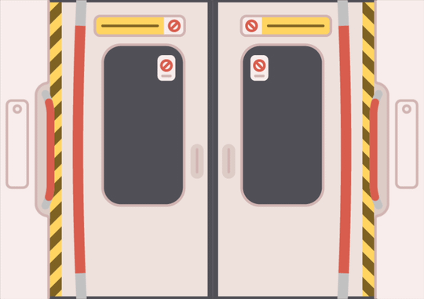

Animated for a long-since banned political party in Hong Kong.
• • •
26 January 2021 marked 180 years since Hong Kong was first occuped by the British… how have things been going since then?
• • •
A common view from my past daily commutes. Just imagine there's 100 more people all around.

END TRANSMISSION